3 - Conduct Data Exploration
Before creating my first models I followed the data exploration protocol found in (Zuur, Ieno, and Elphick 2010). Due to the fact that three of my four predictor variables were categorical in nature and the protocol was developed primarily for continuous variables not all checks were applicable to my models.
(Zuur, Ieno, and Elphick 2010) Protocol
The 8 steps from the (Zuur, Ieno, and Elphick 2010) data exploration protocol include checking for:
- Outliers in the response and explanatory variables
- Homogeneity in the response variable
- Normality in the response
- Zero trouble in the response
- Collinearity in the response
- Relationships in the response and explanatory variables
- Interactions
- Independence in the response variable
library(ggplot2)
library(ggpubr)
library(lattice)
library(gridExtra)
library(ape)
library(tidyr)
library(tidyverse)
library(dplyr)
library(knitr)
library(ncf)
# Reading in the adult black bear data and the camera locality data
Bear<-read.csv("./Data/7_BlackAdultClean.csv",header=TRUE,stringsAsFactors = FALSE)
Locations<-read.csv("./Data/ParksCanadaCameraLocations.csv",header=TRUE,stringsAsFactors = FALSE)
# Setting Season as a factor and ordering it for future plots, this will allow for plots to be ordered in spring, summer, autumn
Bear$Season<-as.factor(Bear$Season)
Bear$Season <- ordered(Bear$Season, levels = c("Spring", "Summer", "Autumn"))
# Separating pre-fire and post-fire data into separate data frames
Pre<-Bear[which(Bear$Status == "Prefire"),]
Post<-Bear[which(Bear$Status == "Postfire"),]head(Bear)## Camera_Code Ordered_Week Species Region Lone_Adult Effort_per_week Season
## 1 H10 217 black Burnt 0 1 Spring
## 2 H10 218 black Burnt 0 7 Spring
## 3 H10 219 black Burnt 0 7 Spring
## 4 H10 220 black Burnt 0 7 Spring
## 5 H10 221 black Burnt 0 7 Spring
## 6 H10 222 black Burnt 0 7 Spring
## Status Group_Size Number_of_Groups
## 1 Prefire 1.818182 11
## 2 Prefire 2.625000 16
## 3 Prefire 2.666667 6
## 4 Prefire 1.333333 6
## 5 Prefire 2.750000 12
## 6 Prefire 2.500000 4Outliers in the response and explanatory variables
The initial test suggested in the protocol is to test for outliers in both the response and continuous predictor variables. In order to check for outliers I plotted the frequency of both the number of weekly bear events and the number of weekly human groups as box and whisker plots and Cleveland dot plots.
Plots
# Box plot of the response variable (Number of adult black bears per week)
Outlier1<-boxplot(Bear$Lone_Adult, ylab = "Number of events per week per camera", main = "Weekly Number of Lone Adult Black Bear Events per Camera")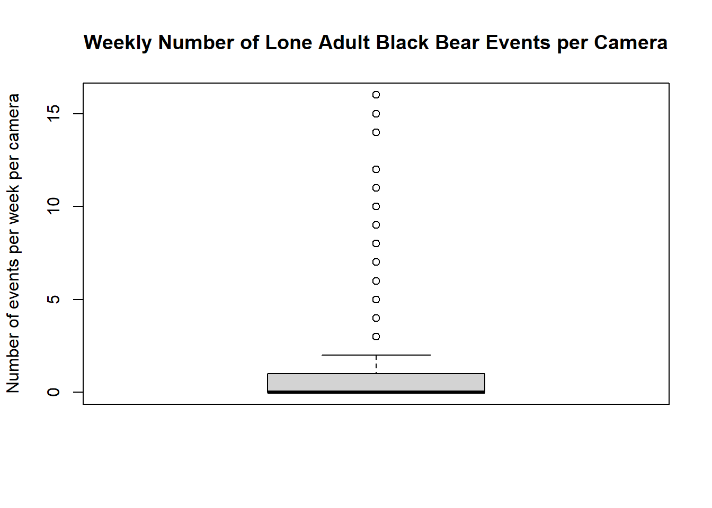
# Boxplot of continuous variable (Number of human groups)
Outlier2<-boxplot(Bear$Number_of_Groups, ylab = "Number of groups per week per camera", main = "Weekly Number of Human Events per Camera")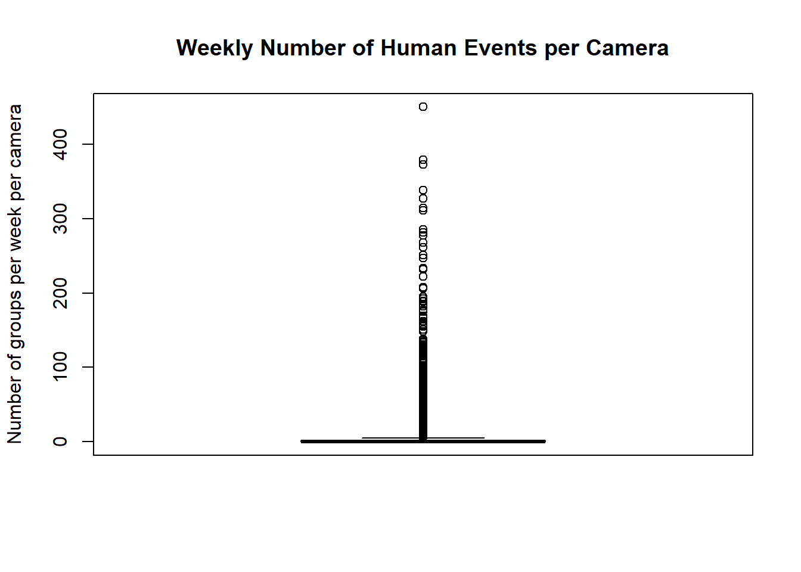
# Cleveland Dotplot of response variable (Number of adult black bears)
Outlier3<-ggplot(Bear, aes(Lone_Adult,Camera_Code)) +
geom_point(aes(color = Season),
size = 2,
position=position_dodge(width = 0.5)) +
labs(title = "Cleveland Dotplot of Weekly Lone Adult Black Bear Events per Camera", x = "Number of Bear Events", y = "Camera Code")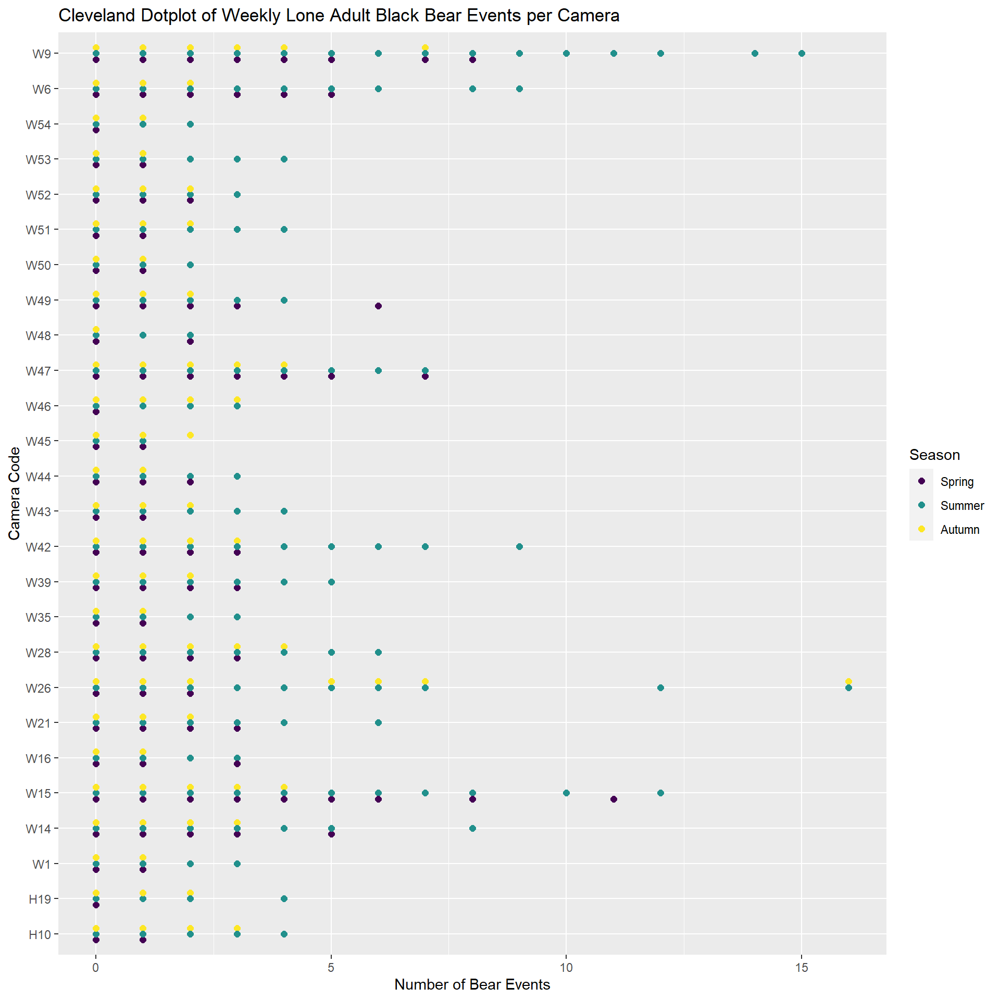
# Cleveland Dotplot of continuous variable (Number of human groups)
Outlier4<-ggplot(Bear, aes(Number_of_Groups,Camera_Code)) +
geom_point(aes(color = Season),
size = 2,
position=position_dodge(width = 0.5))+
labs(title = "Cleveland Dotplot of Weekly Human Events per Camera", x = "Number of Human Events", y = "Camera Code")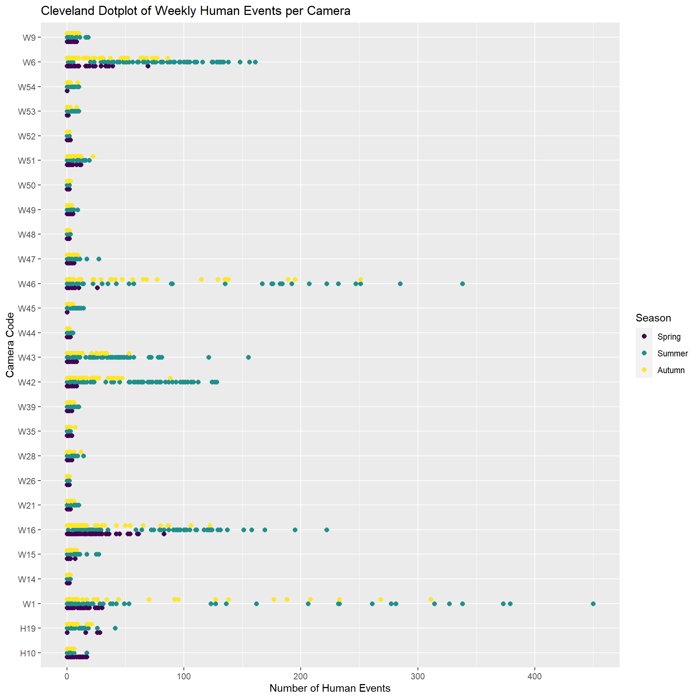
Interpretation and Action
It appears that there are not any outliers in the above plots. Although there are some cameras with high values in both the explanatory and response variables they do not appear to be outliers when compared to all other cameras. Furthermore, I believe that the higher counts on some cameras come from biologically relevant processes and do not represent inaccurate data. I will not be implementing any changes at this stage.
Homogeneity in the response variable
The suggested next step in the protocol is to check the homogeneity of variance in the response variable which is an important assumption for all regression related models. The protocol recommends using conditional box plots to test the response variable homogeneity.
Plots
# Response variable plotted by seasons
Homogeneity1<-bwplot(Lone_Adult ~ Season | Region * Status, data = Bear)
Homogeneity2<-bwplot(Lone_Adult ~ Season | Region, data = Bear)
Homogeneity3<-bwplot(Lone_Adult ~ Season | Status, data = Bear)
Homogeneity4<-bwplot(Lone_Adult ~ Status | Region, data = Bear)
grid.arrange(Homogeneity1,Homogeneity2,Homogeneity3,Homogeneity4)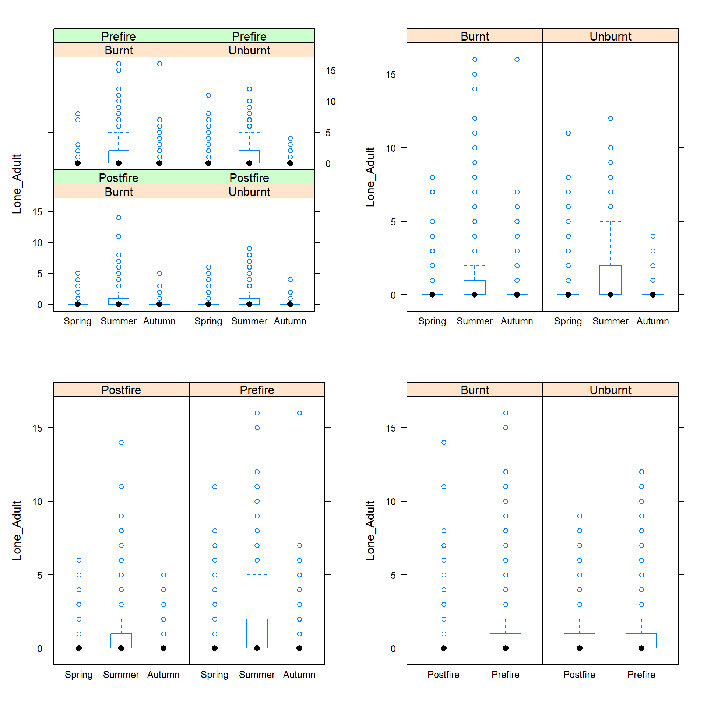
Interpretation and Action
The above plots suggest that there may be a violation in the assumption of homogeneity in the raw data. In all the above plots which contain season the season factor level of summer shows a noticeable difference in variance compared to spring and autumn. In the bottom right plot the burnt postfire data has a noticeably different variance than all the other factor levels in the plot. Both of these violations in homogeneity seem to be rather small and I will continue into the modeling process without making changes to this data because (Zuur, Ieno, and Elphick 2010) suggests that the verification of homogeneity needs to be done in the model residuals. I believe that my zero-inflated model will address this homogeneity problem and therefore I will make sure to verify this post-model fit.
Normality in the response
Many statistical tests assume that there is normality in the response variable and while there are regressions which can address non-normality there is still the requirement to specify the distribution of the response variable. The protocol recommends using histograms or QQ-plots to explore response variable distribution. I have a very strong feeling that this data will not be normally distributed as many count datasets are not and therefore I will not be using a QQ plot. I believe that the histogram will be more informative in displaying the distribution compared to the QQ plot.
Plots
# Plotting the weekly black bear event frequency into a histogram
Normality1<-hist(Bear$Lone_Adult,breaks=seq(-1,16,1), label = TRUE, main = "Frequancy Plot of Weekly Lone Black Bear Events", xlab = "Number of Lone Adult Black Bear Events per Week")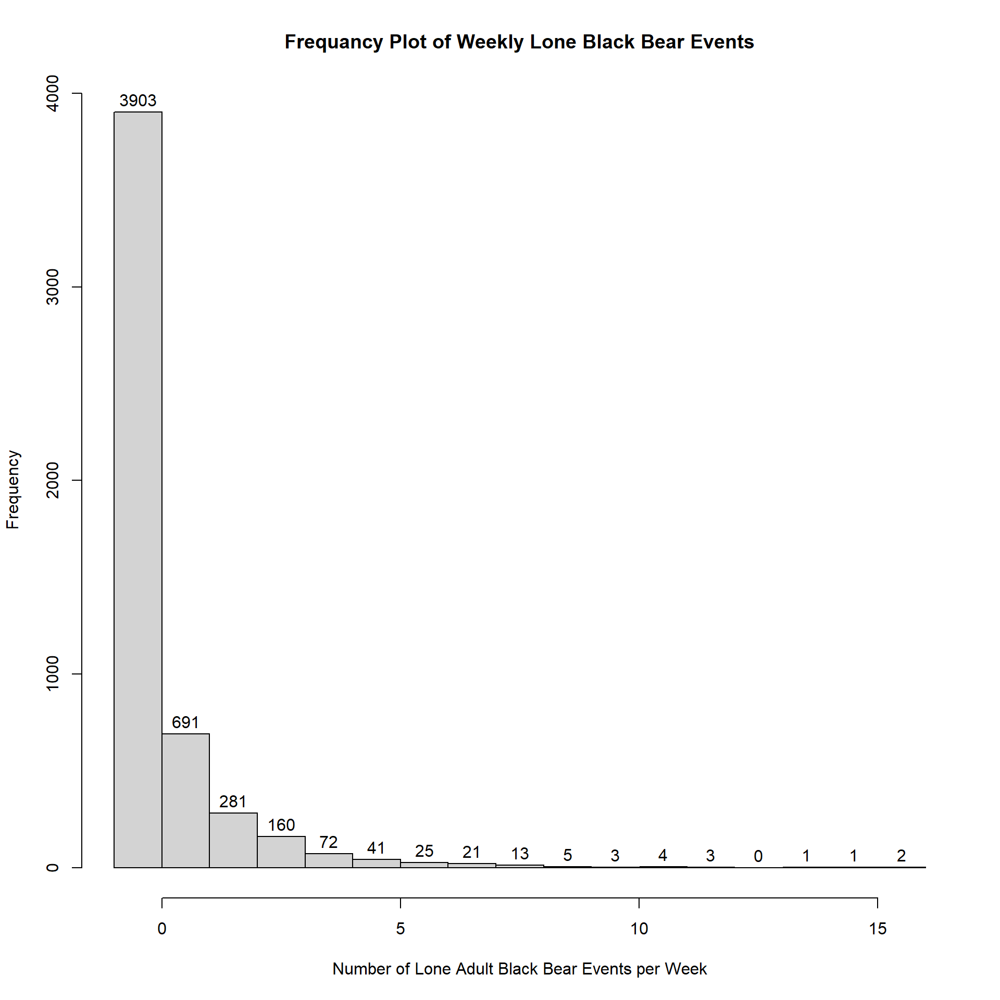
Pre<-Bear[which(Bear$Status == "Prefire"),]
# Histogram of only pre-fire data
Normality2<-hist(Pre$Lone_Adult,breaks=seq(-1,16,1), label = TRUE)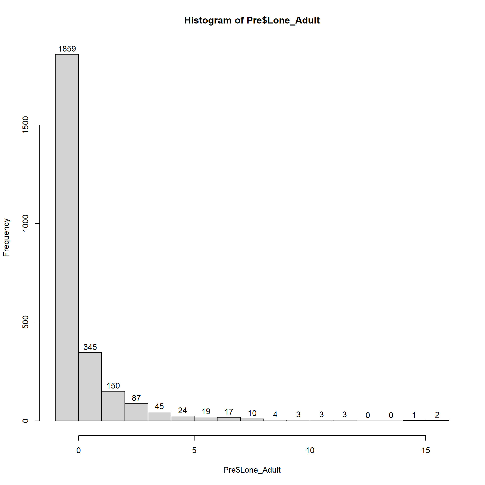
Post<-Bear[which(Bear$Status == "Postfire"),]
# Histogram of only post-fire data
Normality3<-hist(Post$Lone_Adult,breaks=seq(-1,16,1), label = TRUE)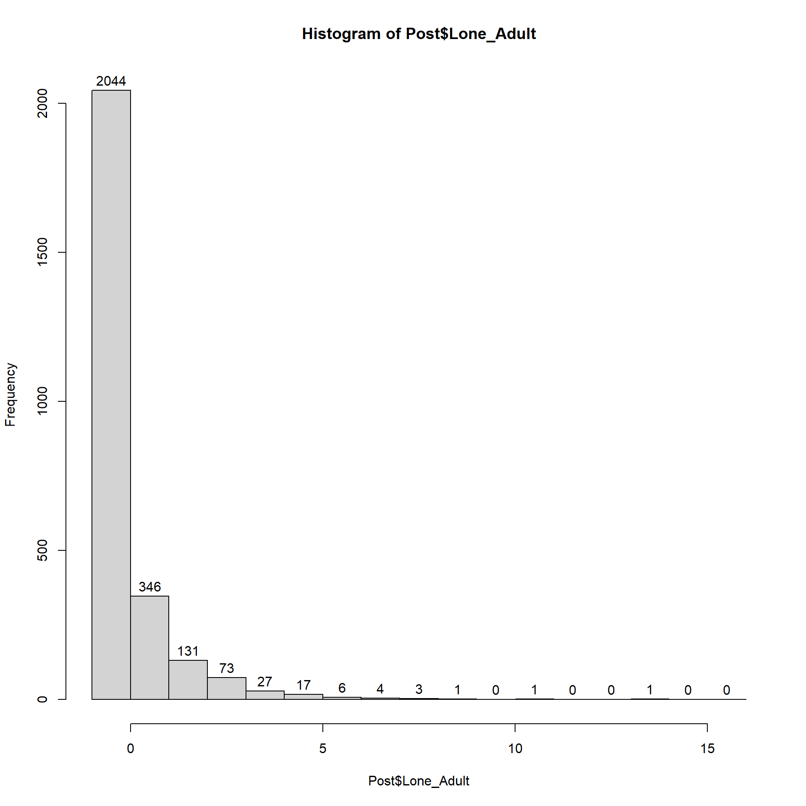
Zero Trouble Y
Large amounts of zeros are common in ecological count data and can complicate statistical analyses if not accounted for. Large amounts of zeros can mean that a zero inflated model is needed, however, it does not mean that a zero-inflated model is necessarily required. The protocol suggests that histograms should be used to assess zero-trouble. These plots will be the same as the normality graphs found above.
Plots
ZeroTrouble<-hist(Bear$Lone_Adult,breaks=seq(-1,16,1), label = TRUE, main = "Frequancy Plot of Weekly Lone Black Bear Events", xlab = "Number of Lone Adult Black Bear Events per Week")
Pre<-Bear[which(Bear$Status == "Prefire"),]
# Histogram of only prefire data
ZeroTrouble2<-hist(Pre$Lone_Adult,breaks=seq(-1,16,1), label = TRUE)Post<-Bear[which(Bear$Status == "Postfire"),]
# Histogram of only postfire data
ZeroTrouble3<-hist(Post$Lone_Adult,breaks=seq(-1,16,1), label = TRUE)
Interpretation and Action
It appears that I may need to consider the use of a zero-inflated model. Although it seems evident looking at the above graphs that a zero-inflated model is needed I will first fit a Poisson model without a zero inflated term and formally test for zero-inflation in the fitted model.
Collinearity in the response
Due to my model only containing one continuous predictor I did not test for collinearity in predictors.
Relationships in the response and explanatory variables
The protocol suggests that all predictors should be plotted against the response variable. It is suggested that in order to explore the relationships we should use multi-panel scatter plots and conditional boxplots.
Plots
Relation1<-ggplot(data = Bear, aes(x = Status, y = Lone_Adult)) +
geom_boxplot()
Relation2<-ggplot(data = Bear, aes(x = Region, y = Lone_Adult)) +
geom_boxplot()
Relation3<-ggplot(data = Bear, aes(x = Season, y = Lone_Adult)) +
geom_boxplot()
Relation4<-ggplot(data = Bear, aes(x = Number_of_Groups, y = Lone_Adult)) +
geom_point() +
geom_smooth(method='lm')
ggarrange(Relation1,Relation2,Relation3,Relation4)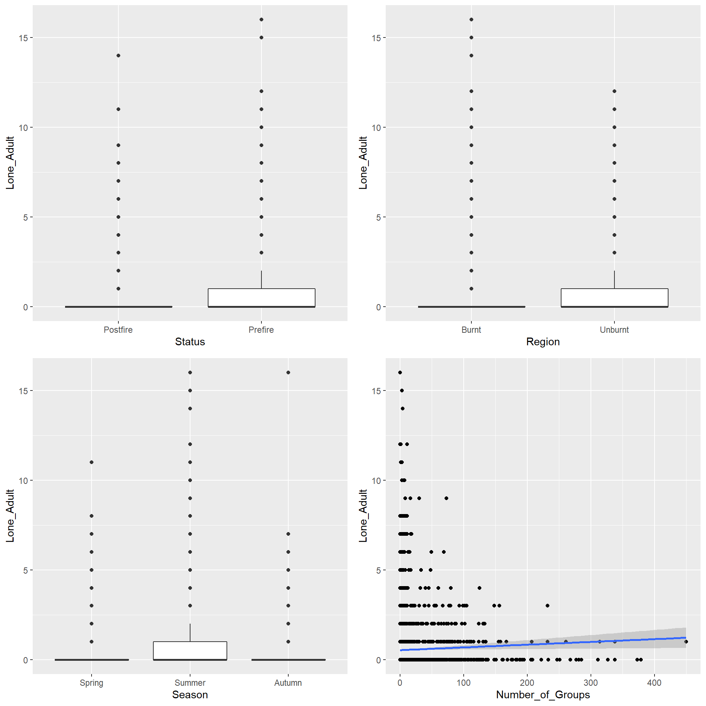
Interpretation and Action
These plots do not suggest any observable issues when plotting residuals against the predictors. The positive relationship between the number of bear events and the number of human groups is unexpected and should be explored further. Overall there are not any alarming trends or points in the plots above.
Interactions
The protocol states that all interactions should be tested in order to evaluate their incorporation into the model. In order to evaluate these interactions it is suggested that coplots are used. Below I have created coplots which plot the relationship of the continuous predictor and response predictor for each level of two of the categorical predictors. Due to three out of four of my predictors being categorical I also included box-plots testing the interactions of only the categorical predictors.
Plots
Interaction1<-coplot(Lone_Adult~Number_of_Groups|Season * Region,data = Bear,
xlab = "Number_of_Groups",
panel = function(x, y, ...) {
tmp <- lm(y ~ x, na.action = na.omit)
points(x, y) })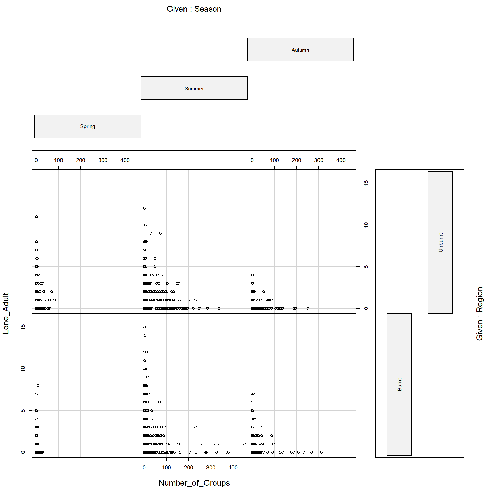
Interaction2<-coplot(Lone_Adult~Number_of_Groups|Season * Status,data = Bear,
xlab = "Number_of_Groups",
panel = function(x, y, ...) {
tmp <- lm(y ~ x, na.action = na.omit)
points(x, y) })Interaction3<-coplot(Lone_Adult~Number_of_Groups|Region * Status,data = Bear,
xlab = "Number_of_Groups",
panel = function(x, y, ...) {
tmp <- lm(y ~ x, na.action = na.omit)
points(x, y) })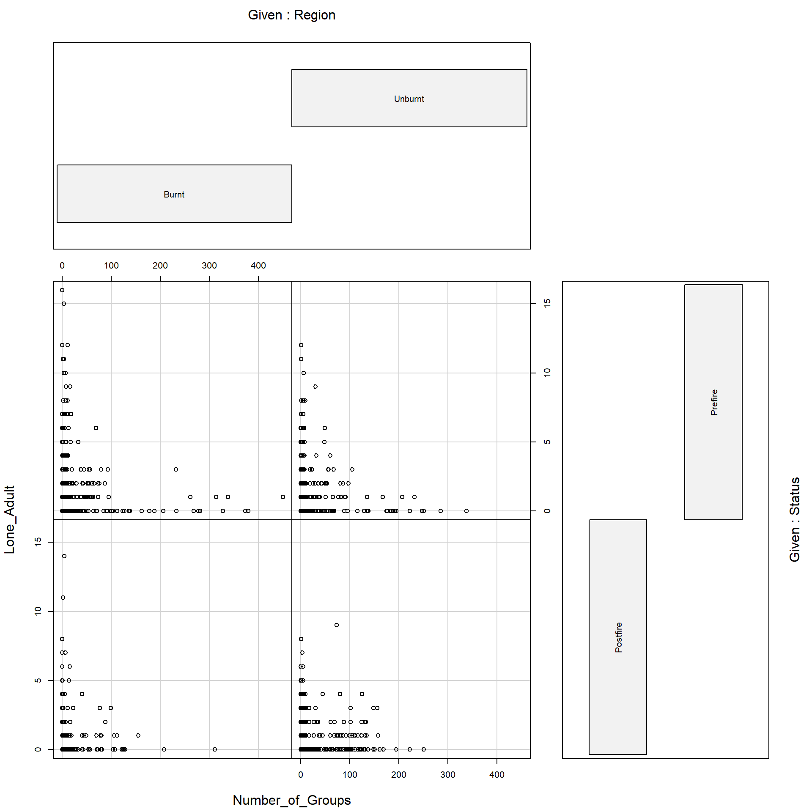
Interaction4<-ggplot(data = Bear, aes(x = Status, y = Lone_Adult)) +
geom_boxplot() +
geom_smooth(method="lm",aes(group=1))
Interaction4 + facet_grid(Season ~ Region)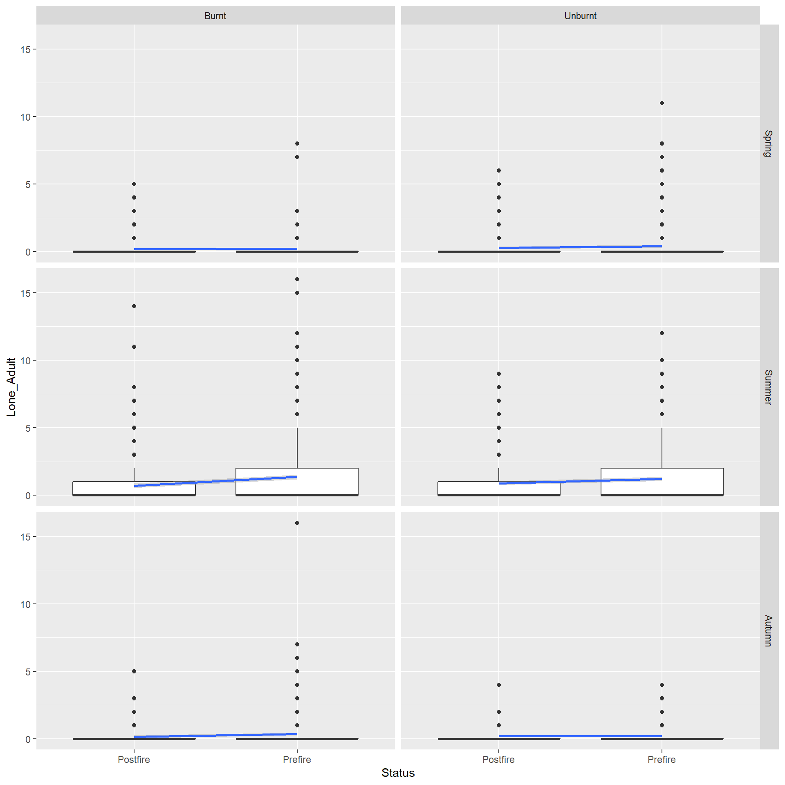
Interaction5<-ggplot(data = Bear, aes(x = Number_of_Groups, y = Lone_Adult)) +
geom_point(stat = "identity") +
geom_smooth(method="lm")
Interaction5 + facet_grid(Region ~ Season ~ Status)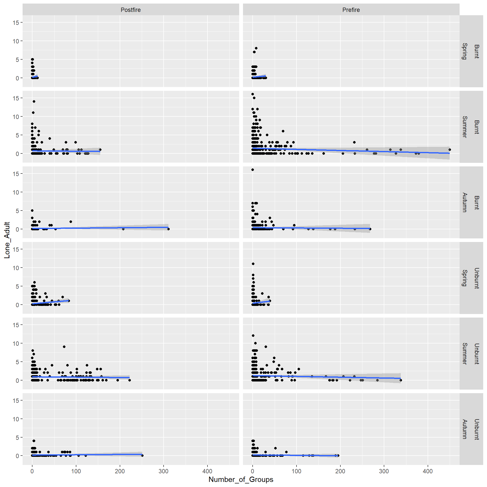
Interpretation and Action
It appears that there are some interesting interactions to keep in mind. It seems that there is a noticeable interaction of season with all other variables being considered. There may also be an interaction of region and time-period but it is difficult to interpret in the graphs due to the large amount of zeros. Overall, there does not appear to be any issues in the data in regards to interactions, during model fit these interactions will be explored further.
Independence in the response variable
The final step in the protocol is checking for independence in the response variable. For this study we will need to explore both the potential of spatial and temporal autocorrelation. In order to test for these we used spline correlograms for spatial autocorrelation and histograms for temporal autocorrelation.
Plots
PreAgg<-aggregate(Lone_Adult ~ Ordered_Week, data = Pre, sum)
PreAggEffort<-aggregate(Effort_per_week ~ Ordered_Week, data = Pre, sum)
PreTotal<-merge(PreAgg,PreAggEffort, by = "Ordered_Week")
PostAgg<-aggregate(Lone_Adult ~ Ordered_Week, data = Post, sum)
PostAggEffort<-aggregate(Effort_per_week ~ Ordered_Week, data = Post, sum)
PostTotal<-merge(PostAgg,PostAggEffort, by = "Ordered_Week")
Independence1<-ggplot(data = PreTotal, aes(x = Ordered_Week, y = Lone_Adult)) +
coord_cartesian(xlim =c(213, 367), ylim = c(0, 55)) +
geom_col() +
geom_vline(xintercept = c(218,231,245,258,270,283,297,310,322,335,349,362))+
geom_line(aes(y = Effort_per_week*0.1),colour = "red", group = 1) +
scale_y_continuous(sec.axis = sec_axis(trans = ~./5)) +
ggtitle("Prefire Bear Events per week per year")
Independence2<-ggplot(data = PostTotal, aes(x = Ordered_Week, y = Lone_Adult)) +
coord_cartesian(xlim =c(525, 679), ylim = c(0, 55)) +
geom_col()+
geom_vline(xintercept = c(530,543,557,570,582,595,609,622,634,647,661,674))+
geom_line(aes(y = Effort_per_week*0.1),colour = "blue", group = 1) +
scale_y_continuous(sec.axis = sec_axis(trans = ~./5)) +
ggtitle("Postfire Bear Events per week per year")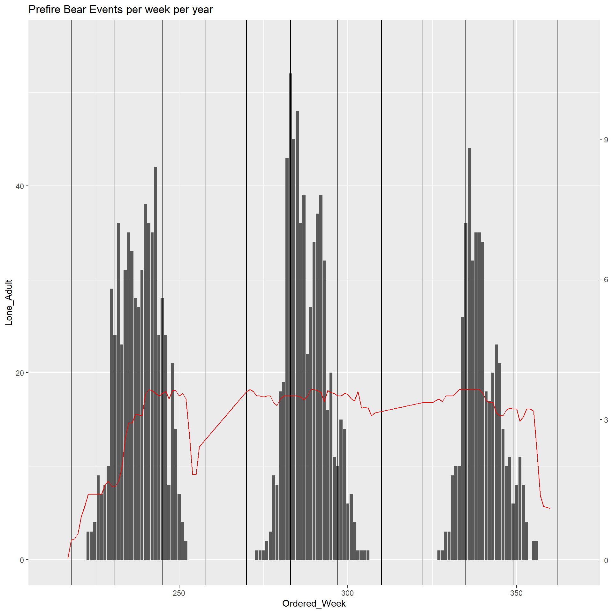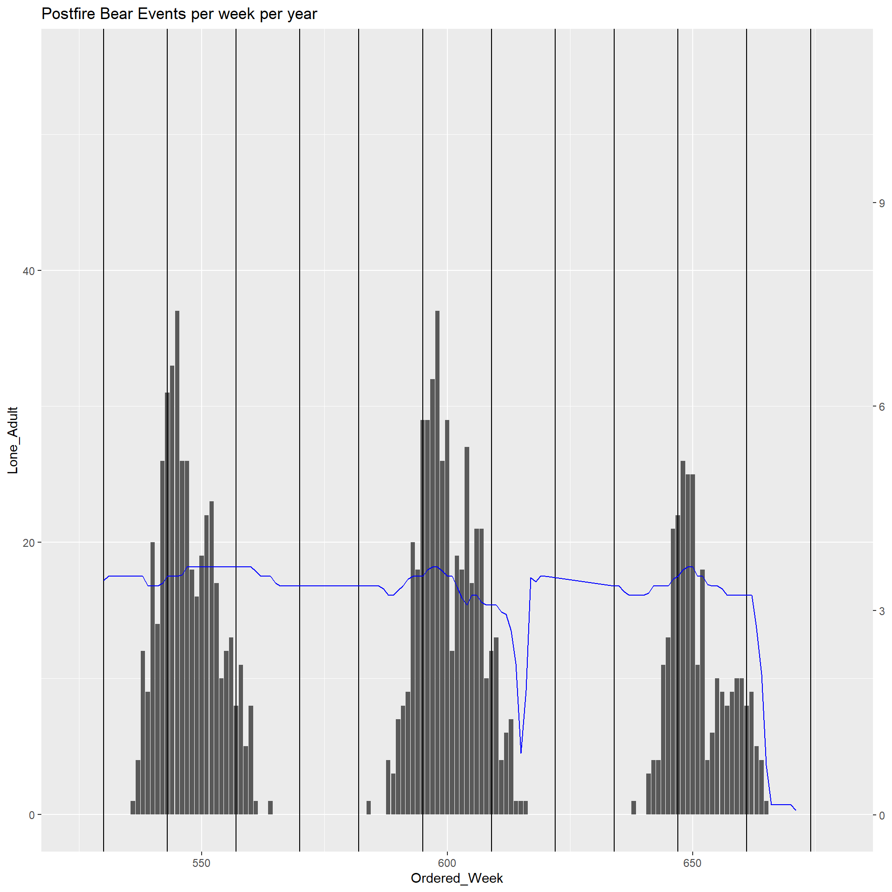
# Spatial Autocorrelation using ncf
colnames(Locations)[which(names(Locations) == "Name")] <- "Camera_Code"
M<-merge(Bear,Locations[,c("Camera_Code","Latitude","Longitude")], by = "Camera_Code")
Agged<-aggregate(Lone_Adult~Camera_Code+Longitude+Latitude, data = M, sum)
SpatialAutocorrelation <- spline.correlog(Agged$Longitude,Agged$Latitude,Agged$Lone_Adult)## 100 of 1000
200 of 1000
300 of 1000
400 of 1000
500 of 1000
600 of 1000
700 of 1000
800 of 1000
900 of 1000
1000 of 1000 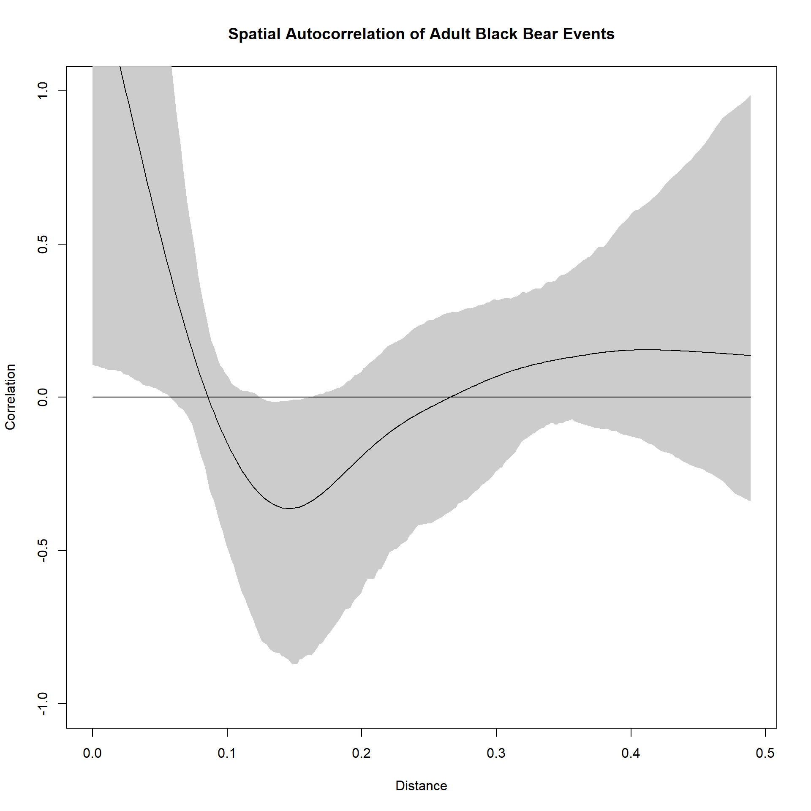
Interpretation and Action
In terms of the temporal autocorrelation there does not appear to be any issue. The distribution of bear events appears to follow an annual trend across all years as opposed to there being a clumping of events.
In terms of spatial autocorrelation there appears to be a rather large effect in the raw data. If we were to observe no autocorrelation we would see a horizontal line at the value of zero. Despite this evidence of spatial autocorrelation in the raw data I believe that my final model will address this issue and I will further test the effect of spatial autocorrelation in the residuals of my model.